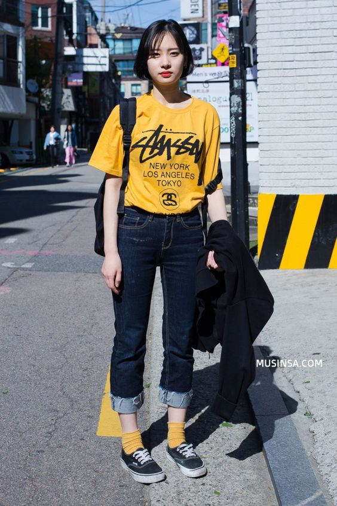
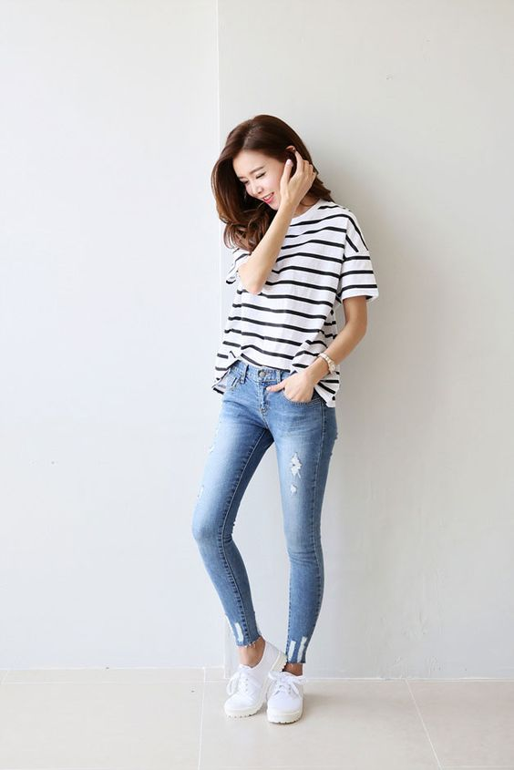
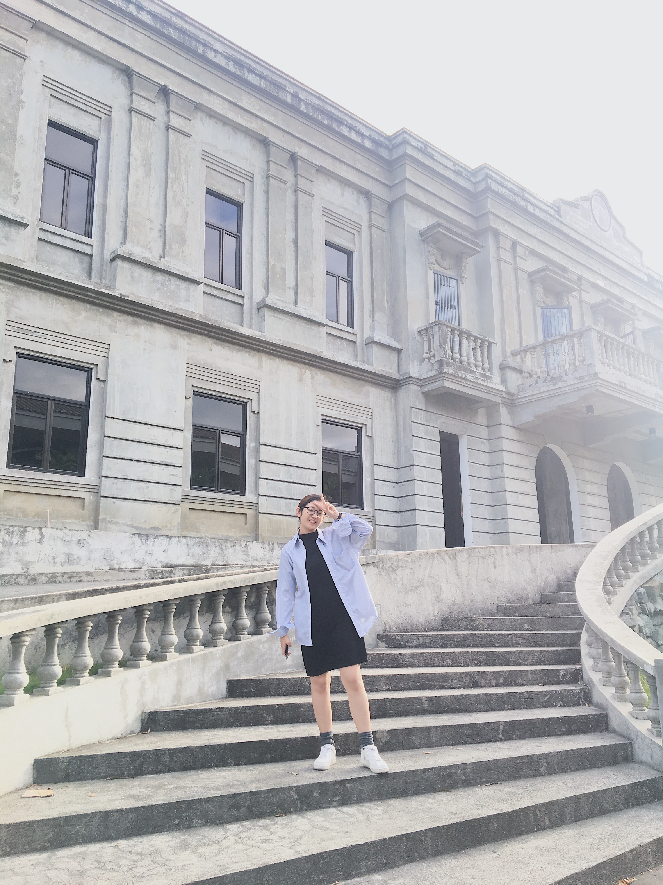
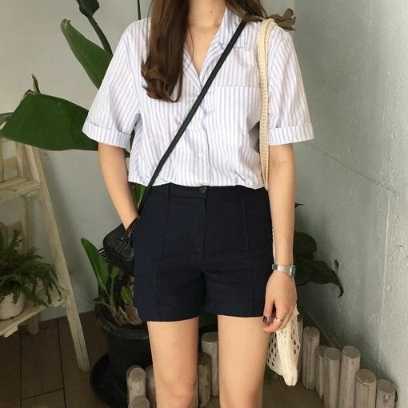
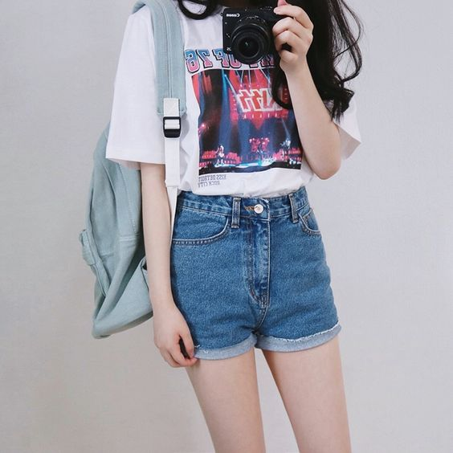
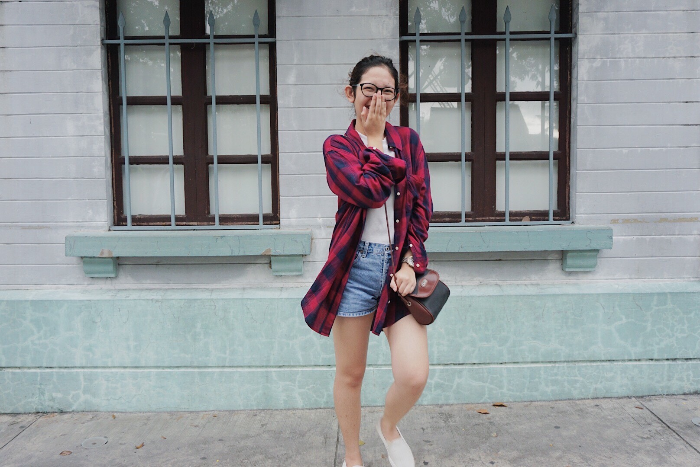
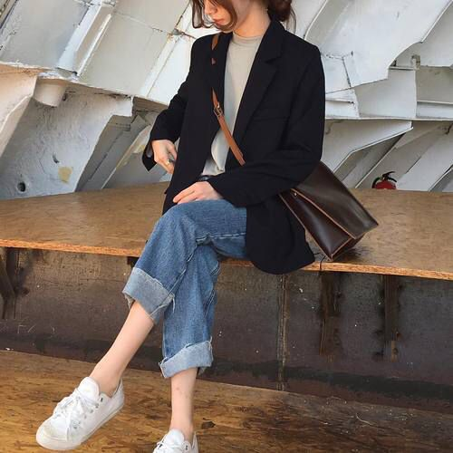
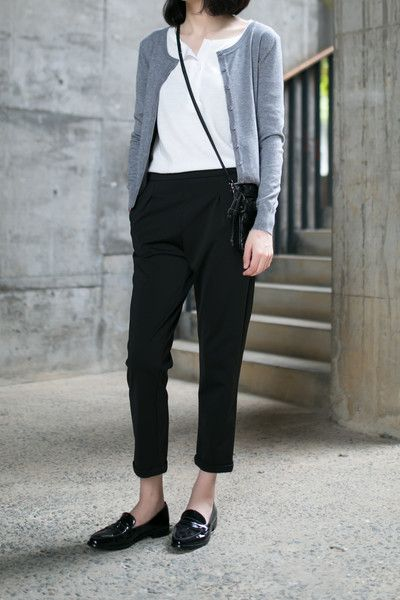
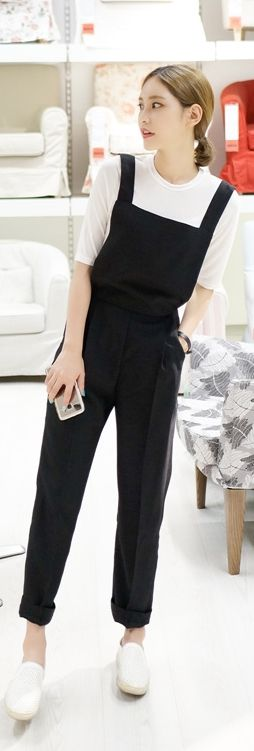

Looking for a #OOTD-worthy getup without sacrificing yourself in the heat wearing layering clothes? And perhaps are you taken over by the Korean skincare products, Korean dramas, Korean pop, Korean fashion, and anything Korean?
Korean fashion varies from cutesy to chic to, sometimes, boyish styles (with the bitin pants and all).
Here are some of the K-fashion inspired outfits I can suggest for you to wear may it be amidst the scorching heat of the sun or under the endless drops of rain in the streets:


Simple combinations for a university #OOTD - jeans and an oversized shirt

You can also experiment with the old office uniform and socks of your father just like what I did



In the mood to have a day out with friends? A shorts paired with any kind of top and a bag will do.



A pair of loose pants is a go-to outfit to showcase the inner chic in you.
"Fashion is about something that comes
from within you."
BACK
|